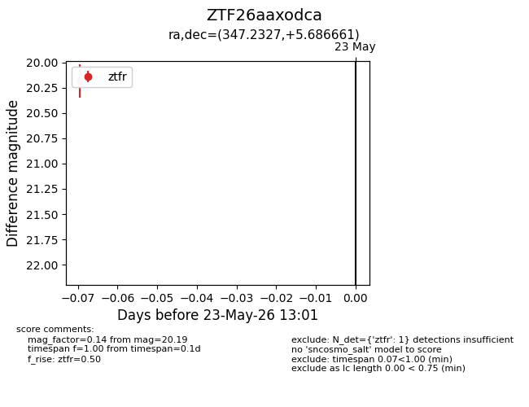
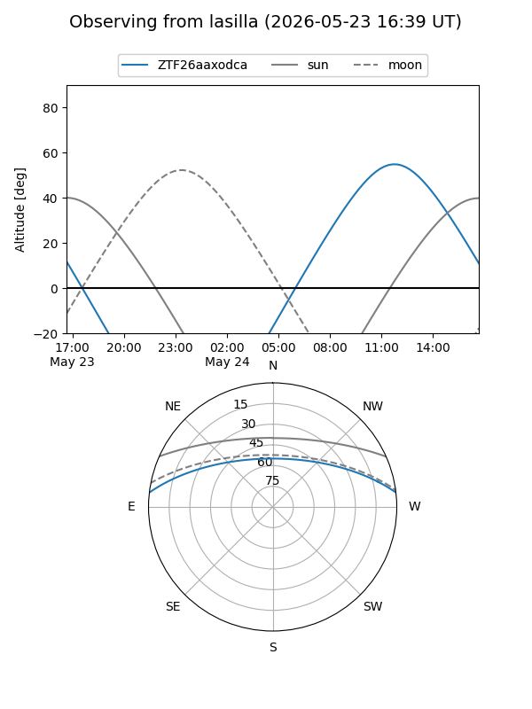
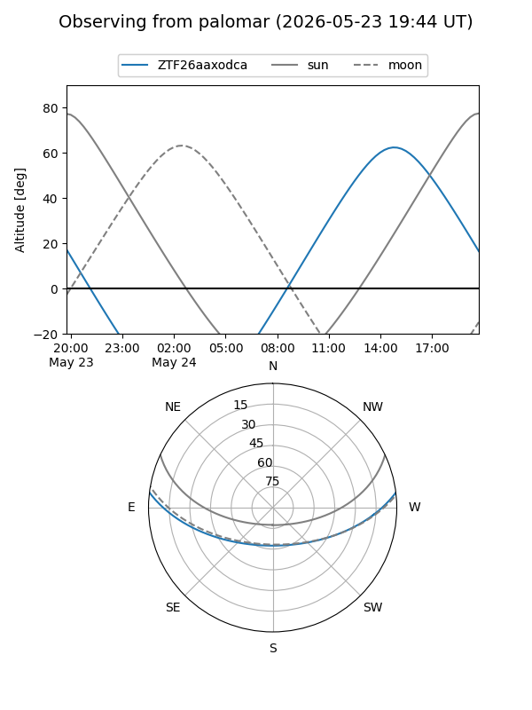
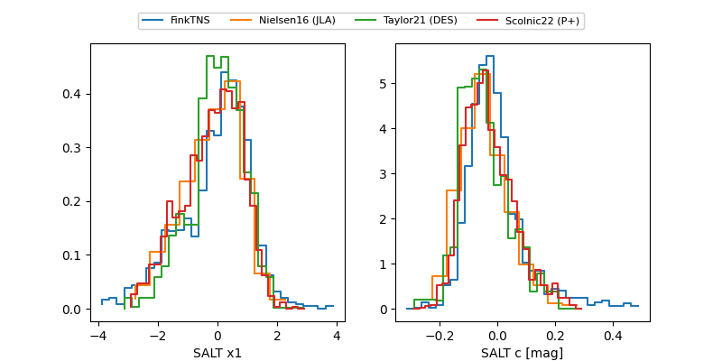

ZTF26aaxodca
Target ZTF26aaxodca at 2026-05-23 13:03
Aliases and brokers:
lsst-FINK: link
lsst-Lasair: link
lsst-ALeRCE: link
ztf-FINK: link
ztf-Lasair: link
ztf-ALeRCE: link
alt names
ZTF26aaxodca (ztf,fink_ztf)
Coordinates:
equatorial (ra, dec) = 347.2327,+5.68666
equatorial (HMS+DMS) = 23:08:55.86,+05:41:11.98
galactic (l, b) = (82.0576,-48.87783)
Flags:
Photometry:
last ztfr=20.19
1 ztfr detections
Lightcurve

Visibility


Additional plots
